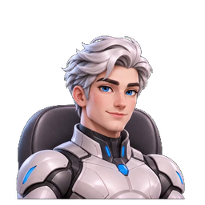
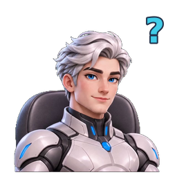
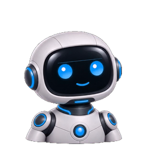
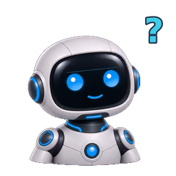

Travail en cours
Regard actif, concentration et petit signe de progression.
Vidéo sourceOrion retrouve un visage humain stylisé, dans l’esprit de Nora. Prisme garde son identité neutre. Trois états par personnage, conçus directement en portrait.
Version écartée : Orion est trop humain et le symbole d’attente a été remplacé. Voir le bot et la nouvelle pose V5.

Regard actif, concentration et petit signe de progression.
Vidéo sourceRespiration douce, clignement et sourire calme.
Vidéo source
Regard vers toi, curiosité et « ? » flottant.
Vidéo source sans symbole
Yeux attentifs et mouvements de concentration.
Vidéo sourceExpression calme et présence discrète.
Vidéo source
Portrait calme et « ? » flottant. Variante locale du repos, sans nouvelle génération.
Vidéo source sans symbole